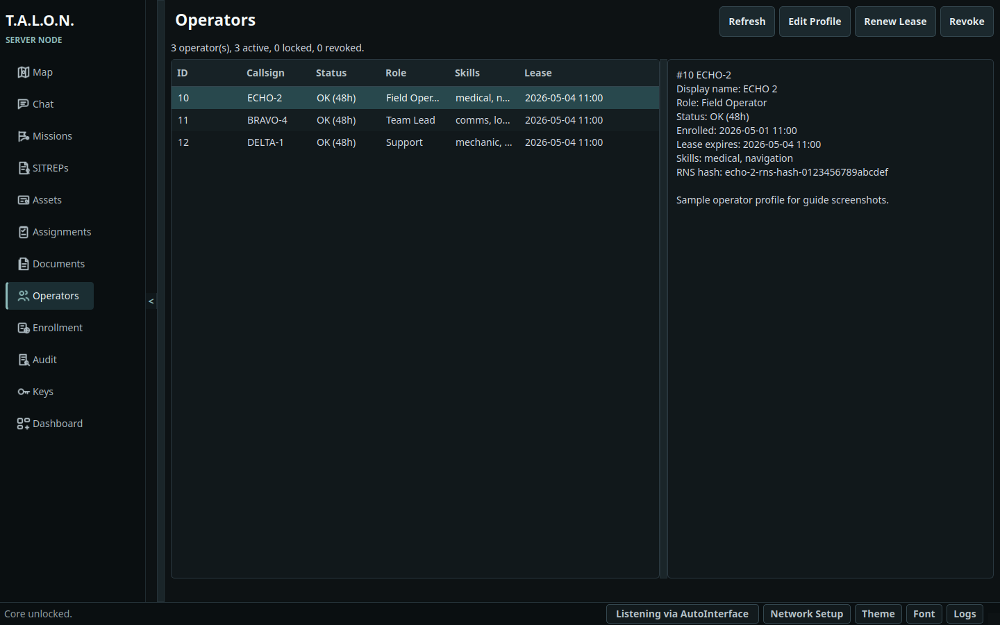

Role-specific navigation
Network, setup, theme, font, and logs
Role-specific navigation
Network, setup, theme, font, and logs
T.A.L.O.N.
Installation, setup, Reticulum configuration, and server desktop operation.
T.A.L.O.N. is a tactical awareness and linked operations network for resilient coordination when normal infrastructure is unavailable. The server desktop is the command node for a deployment. It owns local server authority, client enrollment, operator leases, revocation, audit review, key status, and server-only operational actions.
The server uses a local SQLCipher database and syncs through Reticulum. Operators use the PySide6 desktop to manage maps, SITREPs, assets, missions, assignments, chat, documents, and operator records from one role-specific application.
Role-specific navigation
Network, setup, theme, font, and logs
Use the server-specific Linux artifact. The installer reads the role marker from the extracted bundle and creates a server launcher. Do not pass a role flag to the installer.
tar -xzf talon-desktop-server-linux.tar.gz cd talon-desktop-server-linux bash ./install.sh --yes
| Item | Default path or name |
|---|---|
| Launcher | ~/.local/bin/talon-desktop-server |
| Desktop entry | talon-desktop-server.desktop, displayed as T.A.L.O.N. Server |
| Data directory | ~/.talon-server |
| Application config | ~/.talon-server/talon.ini |
| TALON Reticulum config | ~/.talon-server/reticulum/config |
| Document storage | ~/.talon-server/documents |
| Launcher log | ${XDG_STATE_HOME:-~/.local/state}/talon/desktop-server-launcher.log |
| Option | Use |
|---|---|
--yes | Assume yes for supported system package managers. |
--no-deps | Skip system runtime dependency installation. |
--no-bin | Skip role-specific launcher wrapper creation. |
--no-desktop | Skip desktop entry creation. |
--smoke-test | Run the installed package smoke test. |
--uninstall --confirm-delete "DELETE TALON DATA" | Remove local TALON desktop files, data, identities, documents, logs, and launchers. |
DELETE TALON DATA.Launch talon-desktop-server. Enter the server database passphrase and select Unlock. On a fresh database, choose a strong local passphrase that meets the TALON passphrase policy.

Network setup is available only after the encrypted database is unlocked. The server uses a TALON-owned Reticulum config under the server data directory. Use the dialog to pick a template, import a config, edit the raw Reticulum stanza, validate, then save or continue.
 TALON-owned config path
Templates for common transports
Validate before continuing
TALON-owned config path
Templates for common transports
Validate before continuing
share_instance = No.The server main window has a collapsible navigation rail, the active page, and a status bar. The server navigation contains Map, Chat, Missions, SITREPs, Assets, Assignments, Documents, Operators, Enrollment, Audit, Keys, and Dashboard. The status bar shows core unlock state, the redacted network method, Network Setup, Theme, Font, and Logs.
Use Enrollment to generate one-time client enrollment tokens. Give the full TOKEN:SERVER_HASH value to the client operator through a trusted out-of-band channel. Tokens are temporary and disappear after use or expiry.
 Generate a one-time token
Copy TOKEN:SERVER_HASH
Generate a one-time token
Copy TOKEN:SERVER_HASH
The Operators page lists enrolled operators, lease state, profile details, skills, and revocation state. Server operators can edit profiles, renew leases, and revoke access after confirmation.


Audit shows recent server audit events and payload detail. Keys shows the server hash, Reticulum identity state, operator key status, and server revocation controls. The visible group-key rotation control reports current implementation status and does not silently rotate keys.


The Map page displays OSM, TOPO, or Satellite base-layer controls with TALON overlays for assets, mission areas, routes, waypoints, assignments, operator pings, and located SITREPs. If an operator will be in an area with no connectivity, or limited connectivity, map tiles can be pre cached.
 Layer and mission focus controls
Selection context panels
Layer and mission focus controls
Selection context panels
SITREPs provide a severity feed, open/closed filtering, append-only follow-up notes, assignment, server-only delete, and opt-in FLASH/FLASH_OVERRIDE audio. New SITREPs can include mission, assignment, asset, and map-picked location context.


Assets can be created and edited with category, label, description, and coordinates. Server mode can verify or unverify assets and can hard-delete after confirmation. Client deletion requests appear in the asset list.


Missions include title, type, priority, team lead, team members, requested assets, AO polygon, route, timing, support notes, constraints, objectives, and key locations. Server lifecycle controls include approve, reject, abort, complete, delete, and server edit. Approval opens asset allocation review.


The Assignment Board tracks assigned mission and SITREP follow-up work, operator availability, unassigned targets, and pending sync. The server can assign an available operator to an unassigned mission or SITREP and optionally message that operator.


Chat includes grouped channels, default channels, custom channels, mission channels, direct-message channels, urgent messages, grid-reference attachments, operator presence, alert summaries, and server-only delete controls. Direct-message channels are server-readable until end-to-end encryption is implemented.


Server mode can upload, organize, download, move, rename, and delete documents. Document validation is enforced by core handling. Macro-capable office formats are called out as higher risk before save.


The server unlocks a local SQLCipher database. The passphrase derives the local key used for database and protected local material.
Reticulum identity material belongs in the TALON role data directory and is protected by the unlocked local state. Do not share server and client Reticulum directories.
TALON sync traffic uses Reticulum. The desktop reports only the transport family, not addresses, ports, peers, or device names.
Uploads are size-checked, filename-checked, extension-checked, MIME-checked where available, and hash-verified on download.
| Issue | Action |
|---|---|
| Application will not launch. | Run talon-desktop-server --smoke --mode server or reinstall with --smoke-test. Check the launcher log path listed above. |
| Network setup keeps appearing. | Unlock, open Network Setup, validate the TALON Reticulum config, save or continue, then restart if Reticulum was already running. |
| A client operator cannot enroll. | Confirm the server is running, the server Reticulum path is reachable, the client has the matching client transport config, and the full TOKEN:SERVER_HASH was entered before expiry. |
| Direct TCP warning appears. | The active Reticulum method is direct TCP. Change to Yggdrasil, i2pd, LoRa, or a trusted VPN-backed path if address privacy matters. |
| Document upload is blocked. | Check file size, extension, filename, MIME type, and whether the file is an executable or script type. |